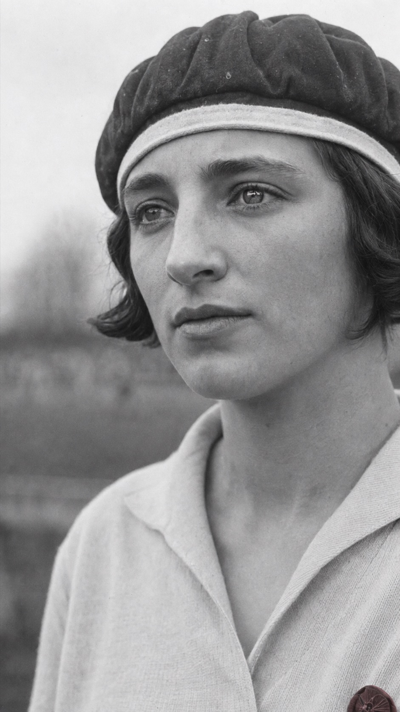

Lotte Specht · 1911–2002
Sie wollte nicht nur zusehen.
Mit 19 Jahren brachte sie in Frankfurt Frauen zusammen, die Fußball spielen wollten. Aus einer Idee wurde 1930 der 1. DDFC.

Die Pionierin
Eine Frankfurter Idee mit großer Wirkung.
Lotte Specht wuchs im Frankfurter Gallus auf. Anfang 1930 suchte sie per Zeitungsanzeige nach Mitspielerinnen. Rund 40 Frauen meldeten sich; etwa 35 von ihnen gründeten gemeinsam den 1. Deutschen Damen-Fußballclub.
Trainiert wurde auf der Seehofwiese in Sachsenhausen. Weil es kaum andere Frauenteams gab, spielten die Mannschaften des Vereins gegeneinander. Öffentlicher Spott, Widerstand und fehlende Unterstützung führten 1931 zur Auflösung.
- 1911
Charlotte „Lotte“ Specht wird in Frankfurt am Main geboren.
- 1930
Sie initiiert den 1. DDFC – einen frühen und wegweisenden Fußballverein für Frauen.
- 1931
Der Verein löst sich unter dem Druck von Ausgrenzung und fehlenden Spielmöglichkeiten wieder auf.
- Heute
Ihr Mut bleibt Vorbild für Frauen und Mädchen, die ihren Platz im Fußball selbst bestimmen.
„Was Männer können, können wir auch.“Lotte Specht